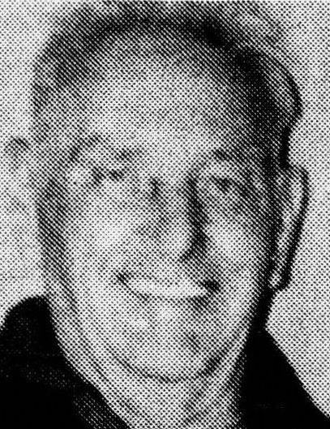
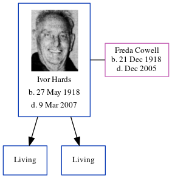

Ivor Hards 1918 - 2007
[ Home ] | [ Calendar ] | [ Surnames Index ] | [ Errors ] | [ Family History ]Ivor Hards, the husband of Freda Violet Cowell (the aunt of Nigel Horne), was born in Cwmcarn, Monmouthshire, Wales on 27 May 19181,2,3,4 and. He married Freda (with whom he had 2 surviving children Derek Ivor Lawrence and Frederick J) at Registry Office, Ramsgate, Kent, England on 7 Sept 19385.
During his life, he was living at 49 Jamesville in Cwmcarn on 19 Jun 19218; on The Hut Bungalow, West Dumpton Lane in Ramsgate on 29 Sept 19391; at 66 Prospect Road, Minster, Thanet, Kent in 19637; and at 106 Tothill Street, Minster, Thanet, Kent in 20036. Ivor appeared in Isle of Thanet Gazette on 9 Sep 1988 on page 19 in Isle of Thanet Gazette on 28 Aug 1998 on page 2
He died on 9 Mar 2007 in Minster, Thanet, Kent4 (age: 89).
Citations
- 1939 Register - Findmypast (was recorded at this address)
- England & Wales births 1837-2006 - Findmypast
- England & Wales, Birth Index: 1916-2005 Online publication - Provo, UT, USA: The Generations Network, Inc., 2008.Original data - General Register Office. England and Wales Civil Registration Indexes. London, England: General Register Office. © Crown copyright. Published by permission of the Cont
- England & Wales, Death Index: 1984-2005 Online publication - Provo, UT, USA: The Generations Network, Inc., 2007.Original data - General Register Office. England and Wales Civil Registration Indexes. London, England: General Register Office. © Crown copyright. Published by permission of the Cont
- England & Wales, Marriage Index: 1916-2005 Online publication - Provo, UT, USA: The Generations Network, Inc., 2009.Original data - General Register Office. England and Wales Civil Registration Indexes. London, England: General Register Office. © Crown copyright. Published by permission of the Cont
- From the Electoral Register
- 1963 Kelly's Thanet Directory
- 1921 Census Of England & Wales - Findmypast (was age 3 and the son of the head of the household)
Media
1963 Kelly's Thanet Directory

Ivor Hards

England & Wales births 1837-2006 Transcription - BMD-B-1918-2-AZ-000525-145
England & Wales marriages 1837-2008 Transcription - BMD-M-1938-3-AZ-000690-133
1939 Register - TNA/R39/1767/1767F/003/33
1921 Census Of England & Wales - GBC/1921/RG15/26359/0313/10
Family Tree
Map
Generated by ged2site. Last updated on Jul 3, 2024
Known Issues
Listed in the residence for 1963, but spouse Freda Cowell is not
Listed in the residence for 2003, but spouse Freda Cowell is not
No records of living with anyone